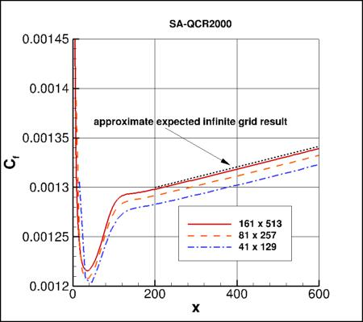
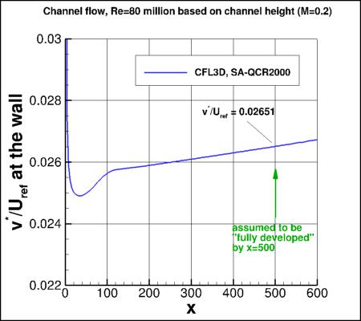
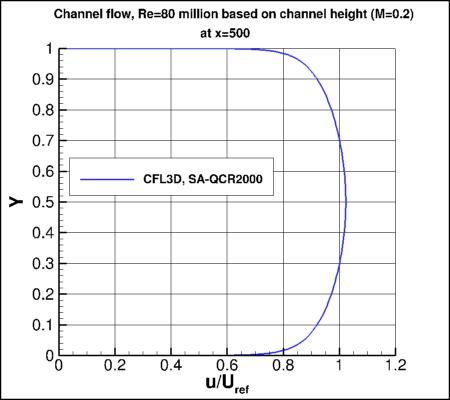
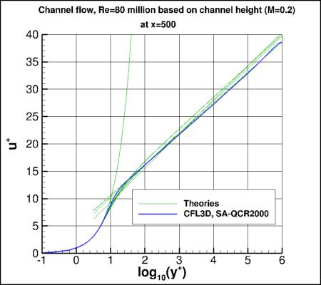
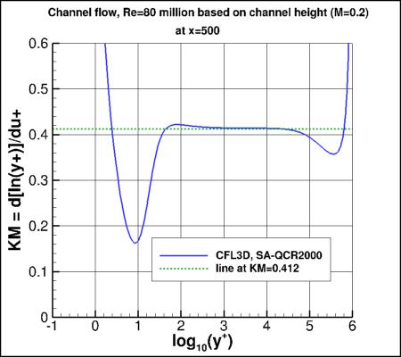
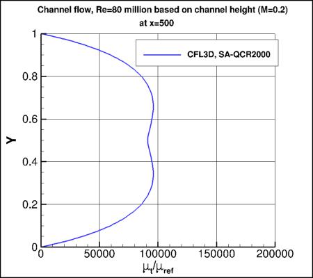
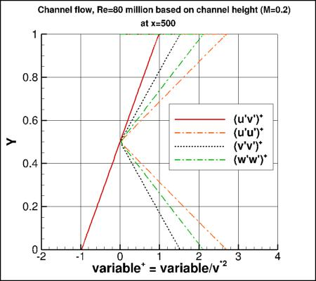
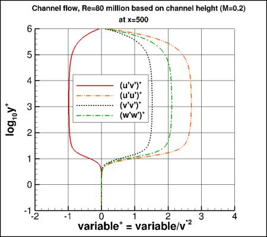

Public Access (formerly Langley Research Center)Turbulence Modeling Resource |
Jump to: SA Results, SSTm Results, SSG/LRR-RSM-w2012 Results, Wilcox2006-klim-m Results, K-kL-MEAH2015 Results
Return to: Fully-Developed Channel Flow Validation Intro Page
Return to: Turbulence Modeling Resource Home Page
2D Fully-Developed Channel Flow at High Reynolds Number Validation Case
SA-QCR2000 Model Results
Link to SA-QCR2000 equations








Above SA-QCR2000 results are from CFL3D on the finest 161x513 grid.
CFL3D used freestream value of the SA turbulence field variable (relative to laminar)=3.
Please read note 5 on Notes on running CFD page.
Note that these are compressible code results; results will be somewhat different for incompressible codes.
In fact, for incompressible flow, the Cf and v*/Uref should become constant (moving downstream) rather
than slowly linearly increasing as shown here.
Note that the quantity v* (as defined in
White, F. M., Viscous Fluid Flow, McGraw-Hill, New York, 1974, pp. 471-474) is often referred to as u_tau.
Note also that Uref used in the above plots is not bulk velocity, but rather
the velocity at the reference position upstream where M=0.2.
The density (used to compute Cf) is also referenced there.
Results are assumed to be sufficiently "fully developed" by
x=500. Looking at the "Karman Measure" (KM), the value of
"kappa" produced by this turbulence model is close to 0.412 over much of the log layer.
The SA-QCR2000 model does not produce a value for the turbulent kinetic energy (k),
which is needed for the normal stresses u'u', v'v', and w'w'.
However, k for SA is sometimes estimated by using the following approximation, or something similar
(see AIAA Paper 92-0439):
nu_t*sqrt(2*Sij*Sij)/a1, where a typical value for a1 is a1=0.31.
Here, this approximation is made solely for visualizing the normal stresses (it is not done while solving the
Navier-Stokes equations). For more details, see discussion on the
SA-QCR2000 Expected Results - 2D Zero Pressure Gradient Flat Plate page.
Note that the QCR2000 version of SA causes separation between u'u', v'v', and w'w', which is more
realistic behavior than for linear (Boussinesq) models. Compare the plots above with those on the
2D Fully-Developed Channel Flow - SA Model Results page.
Note that in spite of the more realistic predictions for turbulent normal stresses given by SA-QCR2000 compared to SA,
the results for the two models are essentially identical for this case in terms of mean flow, wall skin friction, etc.
However, "better" predictions of the turbulent normal stresses
may be important in some other situations (for example, when computing flow near corners).
CFL3D results are given here:
saqcr2000_cf_vs_x_cfl3d.dat,
saqcr2000_utau_vs_x_cfl3d.dat,
saqcr2000_u_cfl3d.dat,
saqcr2000_u+y+KM_cfl3d.dat,
saqcr2000_mut_cfl3d.dat,
saqcr2000_plus_cfl3d.dat.
A typical CFL3D input file is:
saqcr2000_cfl3d_typical.inp.
Jump to: SA Results,
SSTm Results,
SSG/LRR-RSM-w2012 Results,
Wilcox2006-klim-m Results,
K-kL-MEAH2015 Results Return to: Fully-Developed Channel Flow Validation Intro Page Return to: Turbulence Modeling Resource Home Page
Recent significant updates:
02/01/2022 - added mention of expected results for incompressible flow
Page Curators: Christopher Rumsey,
Ethan Vogel,
Clark Pederson
Last Updated: 02/01/2022